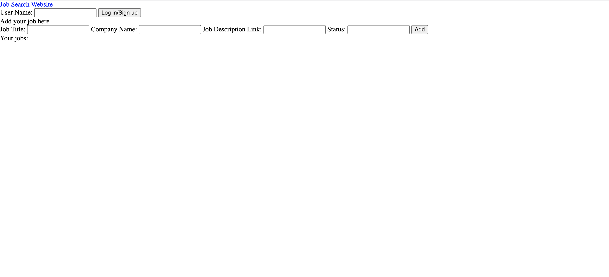
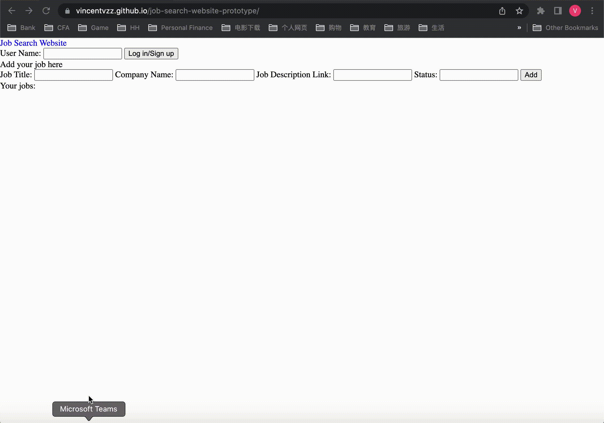

This website provides a pretty simple view of what jobs users have saved, as well as adding new jobs.
I first set up the database, then tried to make functions of logging in users first. After that, I worked on how to add jobs and update values in the database. I realized that the logging in system also needs to consider signing up. Therefore, I treat typing in new usernames as sign up and automatically create one document in the database.
 One of the biggest issues is to figure out the logic of changing data in firestore. I overcomed that difficulties by reading documentations and skimming some stackoverflow questions.
I decided to remove edition on my original extension, because I spent too much time on researching how to import firebase into the chrome extension and had a hard time implementing the module import (although I have written the logic of adding jobs to the database using the extension).
I messed up a little bit of this part, as I have other projects due approximately at the same time period. Also, as I mentioned above, I didn't expect myself to spend too much time on module import issue. Maybe I should post that info in discord once I complete my new project scope.
Right now I will spend more time on polishing UI and thinking on more functionalities that are related to job search. Such changes are largely based on the changes made by project scope.